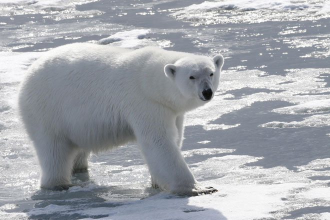
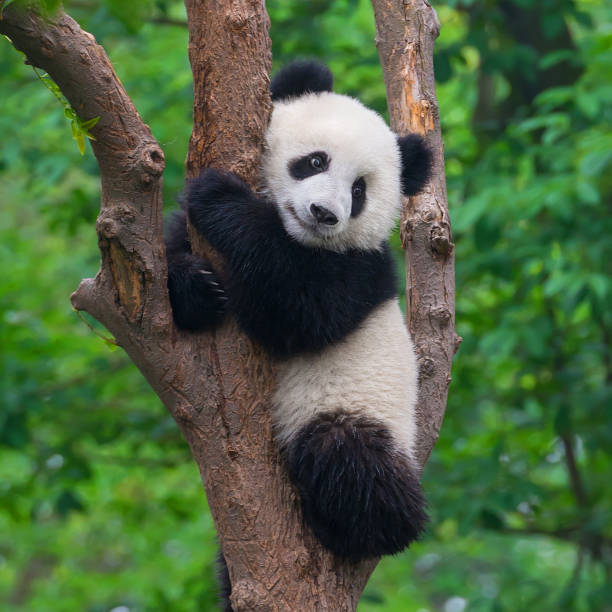
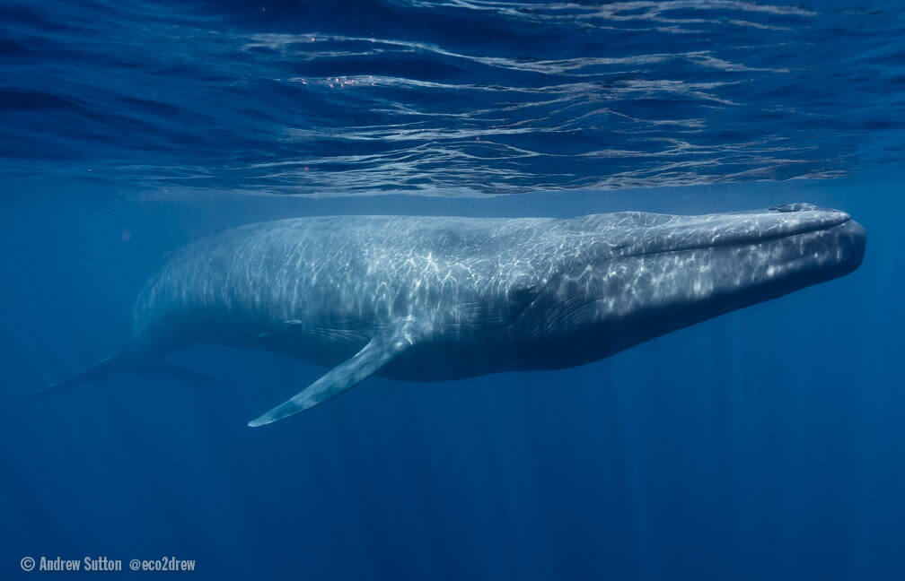
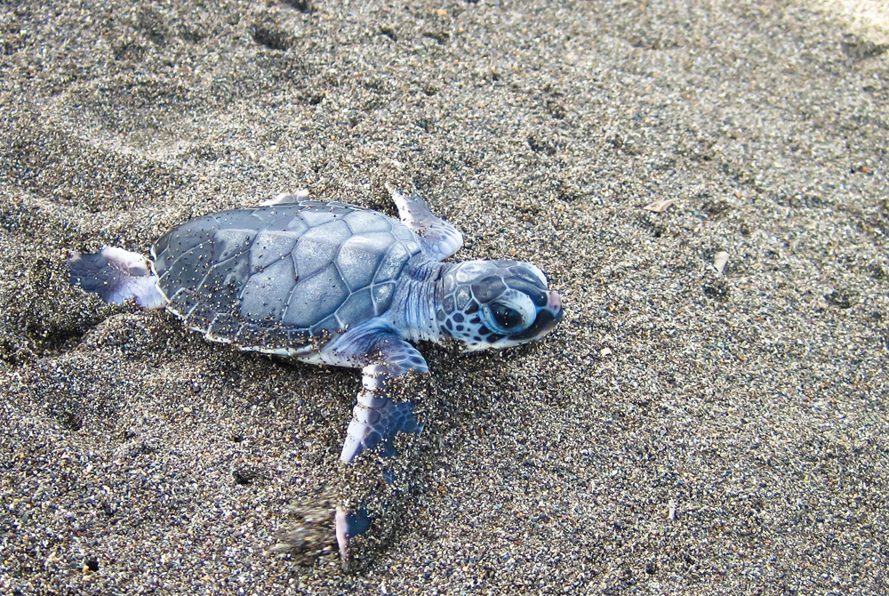

Comment le changement climatique affecte-t-il les animaux ?
Les animaux terrestres:
Les Ours Polaires:
Le réchauffement climatique a des impacts dévastateurs sur les ours polaires, une espèce emblématique des régions arctiques. La fonte rapide de la banquise, causée par l'augmentation des températures, réduit leur habitat naturel et limite leur accès aux zones de chasse. Les ours polaires dépendent de la glace pour chasser leurs proies principales, les phoques, et la diminution de la banquise les oblige à parcourir de plus grandes distances, augmentant ainsi leur dépense énergétique et diminuant leur taux de réussite à la chasse. De plus, la perte de la glace de mer entraîne une diminution de la période de jeûne des ours polaires, affectant leur santé et leur reproduction. Les ours polaires sont également confrontés à des risques accrus de noyade en raison de la distance accrue entre les plaques de glace.
Les Pandas Géants:
Le réchauffement climatique impacte les pandas géants, bien qu'ils vivent principalement dans les régions montagneuses de la Chine, un habitat éloigné des pôles arctiques et antarctiques où les effets sont plus prononcés. L'augmentation des températures et les changements dans les régimes de précipitations modifient les écosystèmes de bambou, qui constituent la principale source de nourriture des pandas. Le bambou, étant très sensible aux variations climatiques, peut voir sa distribution et sa croissance affectées, réduisant ainsi la disponibilité alimentaire pour les pandas. De plus, la fragmentation de leur habitat due à la déforestation et aux activités humaines est exacerbée par le changement climatique, limitant les déplacements des pandas et leur accès aux ressources. Ces changements environnementaux posent des défis supplémentaires à la conservation des pandas, une espèce déjà vulnérable.
Les Harfangs des Neiges:
Le réchauffement climatique exerce une pression considérable sur les harfangs des neiges, des oiseaux emblématiques des régions arctiques. L'augmentation des températures provoque la fonte des glaces et la réduction de la couverture neigeuse, perturbant leur habitat naturel. Les harfangs des neiges dépendent des vastes étendues enneigées pour chasser leurs proies, principalement des lemmings, dont la population est elle-même affectée par les changements climatiques. La diminution de la neige complique la chasse pour les harfangs, réduisant leurs chances de survie et de reproduction. De plus, les variations climatiques influencent les cycles de reproduction et les migrations des harfangs des neiges, les forçant à s'adapter rapidement à un environnement en constante évolution.

Les animaux marins:
Les Baleines Bleues:
Le réchauffement climatique a un impact important sur les baleines bleues, les plus grands mammifères de la planète. La hausse des températures océaniques modifie la répartition et l'abondance de leur principale source de nourriture, le krill. En raison de ces changements, les baleines bleues doivent parcourir de plus grandes distances pour trouver suffisamment de nourriture, ce qui augmente leur dépense énergétique. De plus, la fonte des glaces polaires et la modification des courants océaniques perturbent les routes migratoires des baleines bleues, rendant leur migration annuelle plus difficile et plus risquée. Ces changements environnementaux affectent également les habitats de reproduction des baleines, mettant en danger les populations déjà vulnérables.
Les Requins Blancs:
Le réchauffement climatique affecte les grands requins blancs de diverses manières. La hausse des températures de l'eau modifie les habitats marins et influence la répartition géographique des requins blancs, les poussant à migrer vers des eaux plus fraîches pour trouver des conditions optimales. Ces changements peuvent affecter leurs schémas migratoires, perturbant leur accès aux proies et aux zones de reproduction. De plus, l'acidification des océans impacte les écosystèmes marins, réduisant la disponibilité des proies des requins blancs, comme les poissons et les mammifères marins. Les écosystèmes côtiers, essentiels pour les jeunes requins, sont également menacés par l'élévation du niveau de la mer et les événements météorologiques extrêmes. Ces perturbations écologiques rendent la survie des requins blancs plus difficile, mettant en danger la stabilité de leurs populations.

Les Tortues Luths:
Le réchauffement climatique a des répercussions significatives sur les tortues luths, les plus grandes espèces de tortues marines. La hausse des températures affecte les plages de nidification, augmentant la température du sable. Cette modification a des effets sur la détermination du sexe des nouveau-nés, car la température de l'incubation détermine si les œufs produisent des mâles ou des femelles. Des températures plus élevées favorisent la naissance de femelles, perturbant l'équilibre sexuel des populations. De plus, la montée du niveau de la mer et l'augmentation des tempêtes érodent les plages de nidification, détruisant les sites de ponte. Les tortues luths, qui dépendent des courants océaniques pour se déplacer et trouver leur nourriture (principalement des méduses), voient également leurs zones d'alimentation modifiées par les changements de température de l'eau. Ces perturbations impactent la santé et la survie des tortues luths.
